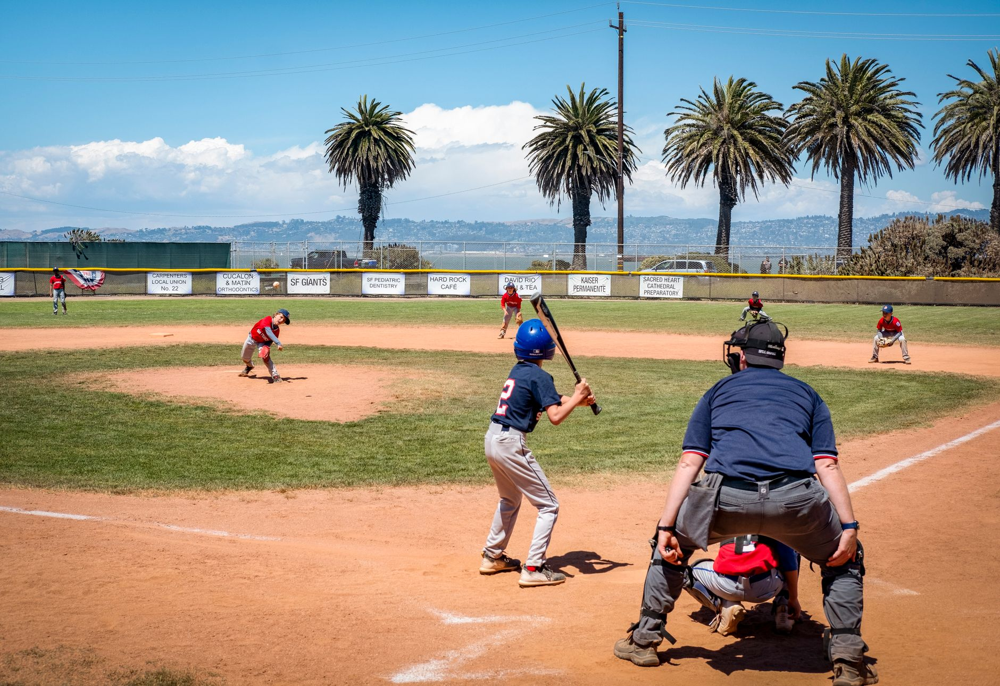

Structure your practice for maximum engagement
The biggest mistake new coaches make is jumping straight into heavy drills without a proper warmup. Young players have varying energy levels, and a structured flow helps them transition from social mode to game mode. Start every session with a dynamic warmup that includes light jogging, arm circles, and stretching to prevent injuries and prime their muscles for action.
Once the bodies are warm, move into a skill-specific phase. For youth teams, it is best to divide the practice into short, high-intensity segments. If a drill lasts longer than fifteen minutes, you will likely lose their attention. Keep the transitions quick and the energy high to ensure every minute on the field counts toward their development.
Focus on fundamental fielding drills
Fielding is the foundation of baseball. For young teams, focus on the mechanics of getting into the correct position. Teach them to stay low, use their glove as a funnel, and follow through with their throwing motion. Instead of standing in long lines, which leads to boredom, use station-based training to keep everyone moving.
One effective drill is the alligator drill. Have players use two hands to scoop the ball, mimicking an alligator's jaws. This reinforces the habit of using the non-glove hand to secure the ball. Another great option is the short hop drill, where players practice reacting to balls that bounce directly in front of them, building hand-eye coordination and confidence.
The goal of youth fielding drills is not perfection, but the development of muscle memory that holds up under pressure.
Develop hitting confidence through repetition
Hitting is often the most intimidating part of the game for children. To build confidence, your practice plans should include a mix of tee work, soft toss, and live coach-pitch. Tee work is essential because it allows players to focus purely on their swing mechanics without the added stress of a moving ball. It helps them find their balance and understand where their contact point should be.
Always emphasize the process over the result. If a player swings perfectly but misses the ball, praise the mechanic. This positive reinforcement builds the mental toughness required to handle the inevitable strikeouts that come with being a young hitter.
Incorporate base running and situational awareness
Many coaches neglect base running, but it is one of the easiest ways to score runs in youth baseball. Practice the basics: running through first base, rounding second, and knowing when to stop. Use relay races to make these drills fun and competitive. Competition is a powerful tool for keeping young players motivated during repetitive tasks.
Once the basics are mastered, introduce situational awareness. Ask questions like, Where do we throw the ball if the ball is hit to the shortstop? What should the runner do if there is a catch on a fly ball? Teaching them to think the game, rather than just react to it, will give them a significant advantage as they move up to older divisions.
Final tips for successful coaching
Consistency is your best friend. If the players know what to expect at the start of every practice, they will settle into their routines much faster. Always end your session on a high note. Whether it is a fun game of base running races or a quick team huddle, leaving the field with a smile ensures they will want to come back next time.
As your players grow and their skills advance, you will need to dive deeper into specialized areas. For example, once your players show interest in the mound, you can transition from general mechanics to more specific training. To help your pitchers excel, check out our guide on Mastering Baseball Pitching Mechanics: A Complete Guide at https://dhyey.bond/blog/mastering-baseball-pitching-mechanics-a-complete-guide/ to ensure they are developing healthy and effective habits.
See Also
If you enjoyed this Baseball Guide article, check out Mastering Baseball Pitching Mechanics: A Complete Guide for more useful reading.